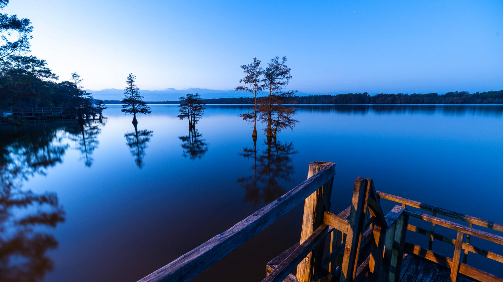
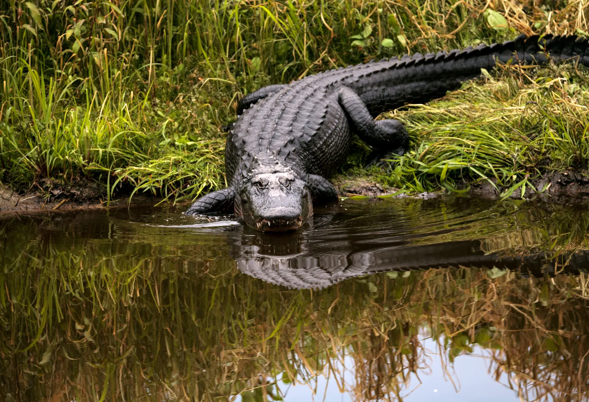
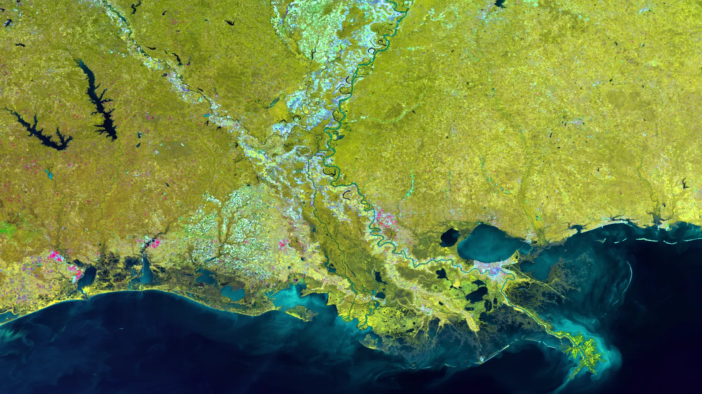
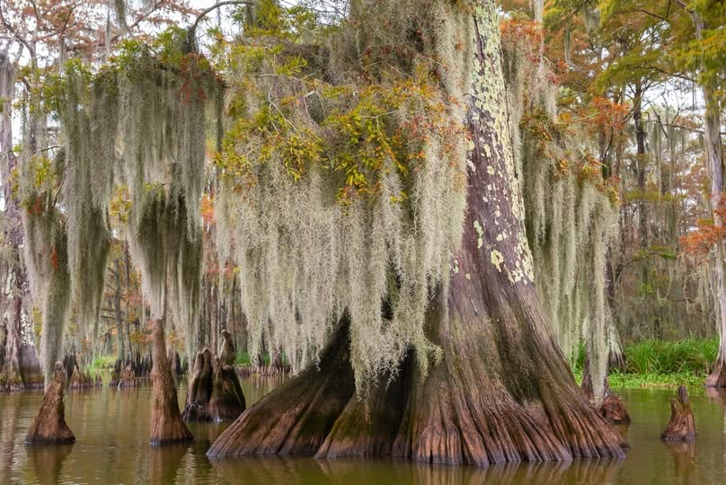
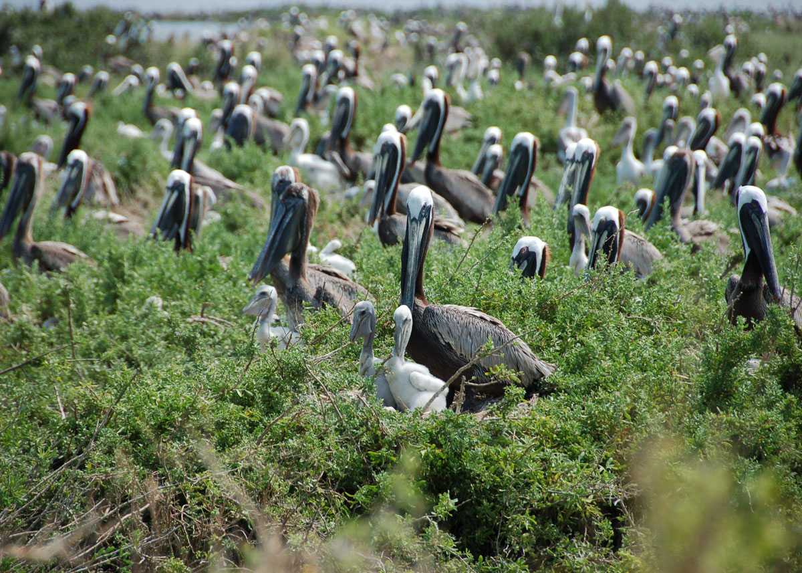

© Mississippi River CountrySpring, from March through May, is the best time to visit the Mississippi Delta. The weather is warm and pleasant, wildflowers bloom across the wetlands, and migratory birds fill the skies. It is the perfect season to explore the bayous by boat, stroll through New Orleans' historic neighborhoods, and enjoy open-air festivals without the intense summer heat.
Autumn is a great second option, with cooler temperatures and fewer crowds. If you love jazz and local culture, plan your trip around the New Orleans Jazz and Heritage Festival in late April and early May, one of the most celebrated music events in the world.

© City of North Port, FLThe Mississippi Delta is one of the most spectacular places in North America to experience wildlife up close. Over 400 species call this region home, from American alligators gliding through the cypress swamps to roseate spoonbills wading in the shallow marshes. Whether you are a keen birdwatcher or simply someone who loves nature, the delta will leave you speechless.
The delta sits along the Mississippi Flyway, one of the great bird migration routes of the continent. Every spring and autumn, millions of birds pass through, making it a dream destination for wildlife photographers and nature lovers alike.
The Mississippi River stretches 3,730 kilometers from the forests of Minnesota all the way to the Gulf of Mexico, and its final stretch through Louisiana is unlike anything else on Earth. Here the river splits into a web of channels, bayous, and waterways that open up into a vast coastal landscape of marshes, barrier islands, and open water.
Renting a boat or joining a river cruise is one of the most memorable ways to take in the delta. You can glide past ancient cypress trees draped in Spanish moss, spot herons fishing along the banks, and watch the sun set over a horizon with no buildings in sight.
No visit to the Mississippi Delta is complete without sitting down to a proper Creole or Cajun meal. The delta's waters produce some of the finest seafood in the world, and locals have been turning shrimp, crawfish, oysters, and blue crab into extraordinary dishes for generations.
Beyond the plate, the delta is a place of deep cultural richness. New Orleans is famous the world over for its music, its festivals, and its unique blend of French, African, and Caribbean influences. Wander through the French Quarter, catch a live jazz performance on Frenchmen Street, or explore the colorful markets and antique shops.
Discover the many ways to experience the Mississippi Delta, from silent bayou cruises to the vibrant streets of New Orleans.

© NESDIS
© via Facebook
© C.C. Lockwood / Country Roads Magazine